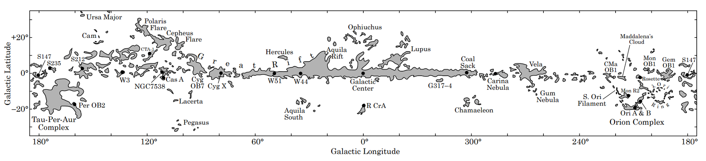
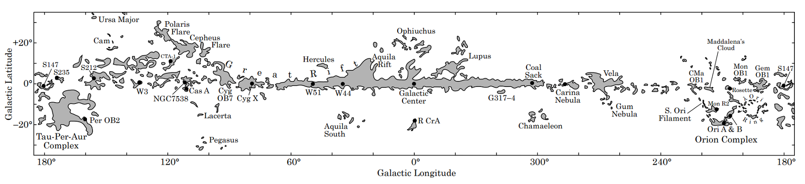

How do I use online books#
On top of the obvious advantages of owing a website to share science, there is multiple benefits arising from the building method itself
Notebook#
Fitted for My Needs
I have Limitations with hand written notebooks ✍
Limited inputs
Only text notes are available (sorry for stating the obvious), however a whole diversity of content is now generated: videos, podcasts, websites … It is impossible to refer to the wide variety of content available within a written notebook.
1 Dimension
A written notebook is unidimensional, one entry after the other
Inadapted for online content
No ability to save links towards ressources along with notes
No iterative implementation
blabla
No compartimentation
blabla
Constant formatting
Hard to maintain and keep consistent over time
Finite lifetime
blabla
and found no bespoke alternative, so I designed my own
Solution
Markdown  + Jupyter Lab
+ Jupyter Lab  = Jupyter Book
= Jupyter Book 
All kind of inputs
Only text notes are available (sorry for stating the obvious), however a whole diversity of content is now generated: videos, podcasts, websites … It is impossible to refer to the wide variety of content available within a written notebook.
Multiple outputs
pdf and html
All in one software
Python notebook and Markdown notebook using the same software
Fitted for scientific writing
Bibliography
References
Figures
Tables
Equations
Links and hyperlink …
2 Dimension
Implement diagram
Compartiment knowledge
blabla
Iterative implementation
Write as you go along they said … It will be fun they said …
Allow Feedback
Work is publishable as you go along (or not), and you can get feedback at every steps during your scientific journey.
Consistant formatting
Hard to maintain and keep consistent over time
infinite lifetime
blabla
Transferable / Recyclable
Recycle your talks ! Put them online and give them a quick twist to fit a wider audience.
Semantic Web compatible
blabla

Markdown vs Latex or Word ?
Result
Multiple research compendiums organised in a Knowledge Base

Iterative workflow 
Infinite lifetime 
A method  that works for me, and that I am happy üòÅ to use !!
that works for me, and that I am happy üòÅ to use !!
Edition#
I am in charge
My own style, my own rules: open to experiment and innovation 
Scientist are already in charge of the edition burden of their work, by using latex template to fit the journal format requirements. Those requirements are based upon print publication, even though most of the content is read online. As a result we are constrained by unnecessary guidelines.
Freedom
Versatile Canvas
I can do much (much) more than what is allowed by a paper based model of publication
 

✨
Astronomical Images

I mean, c'mon ...
I have always been frustrated by the fact that I could never play with the edition aspect of every piece of science I have been writimg. All the time I had to obey to a certain template that I never found appealing to me. Owing my own web-site give me the opportunity to be an integrant part of the edition process as it clearly is an editorial sandbox.
Endless Formatting Options
Aring from the web-development tools and community

I can embrace my creative self üòò
Storage#
All in 1
I am the owner of my work, and hence don't have to scatter it around
Evolving Architecture
I often spoke with my supervisor about how a PhD is an eveloving creature
4 Options
Complementary
Local computer
Daily
Hardrive
Monthly
Github
Weekly
Data repository
As needed
good and consistent archiving method
Open Science#
FAIR Data Principles
Findable
Data Repository
Accessible
Interoperable
Reusable

Easy
As simple as clicking on a button
Communication#
By me
Hybrid
Web support
Multiple style
Presentation
Text
Participatif
Video
Guide you through the page
Keep your attention
Links
For Everyone
Curious and interested in Science üåç
Supervisors
Researchers
Students
Teachers
Friends
Anyone
My Job to point you in the right direction
Map


With you
Multiple ways
Notes
Comments
Annotations
Chat
To Test
Collaboration#
Example
How do planets forms ?

Require multidisciplinary expertise
Collaboration 101
Creating a space for each expert to give an overview of his field


Collaborative Space
To Explore
Management#
Tools I need
vs the tools I am told to use (by Graduate schools)
‣ Collaborative To-Do Lists #
There is a plethora of tools outhere that are free for individuals (or non-profit / Open source applications)
Keep track of progress
Note
- Insert Gant Chart
- Insert notes
- Daily notes
- Monthly meetings
- …
Publications#
Scientific Publication System

Changing the publication Culture
Why ?
Note
Broader reach -> Bigger impact
Engagement#
Multiple Actors
Scientist, Artists, Policy makers, the public
Scientist
From different disciplines
Artists
- Marta: Comics
Policy makers
Public


{kind=link}
{kind=link}
Social media#
Connect Researcher with the general public. Collaboration beyond academia (
utterancecomment)